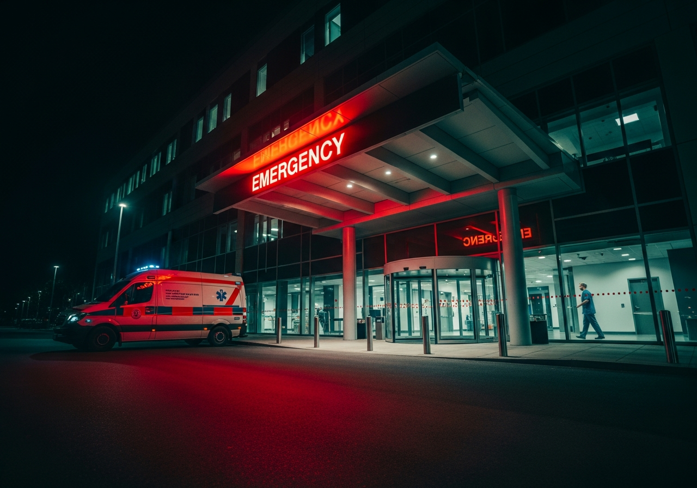

When Every Second
Counts
Our 24×7 emergency unit is always ready — trained trauma teams, advanced life-support equipment, and rapid response protocols to save lives.
Call Emergency: 9263403905Rapid, Life-Saving Emergency Care
Wangduk Health and Research operates a fully equipped, round-the-clock Emergency Department staffed by experienced emergency physicians, trauma surgeons, critical care nurses, and paramedics. Our emergency unit is designed for high-speed, high-stakes care — every team member is trained to act decisively when moments matter most.
Our trauma bay has advanced life-support equipment including defibrillators, ventilators, cardiac monitors, and rapid infusion systems. We are equipped to handle cardiac arrests, strokes, major trauma, respiratory failures, poisoning, burns, and all other critical emergencies with protocols aligned to international standards.
We understand that emergencies affect families as much as patients. Our team communicates clearly with patient families, provides regular updates, and ensures dignified, compassionate care throughout every critical situation.
Ready for Any Emergency
Life-Saving Interventions
Always Ready. Always There.
Our Emergency Team

Emergency Response Timeline
Emergency Care FAQs
In an Emergency, Every Second Matters
Our emergency team is available 24×7. Don't hesitate — call immediately or bring the patient directly to our Emergency Department.
Call 9263403905 Now